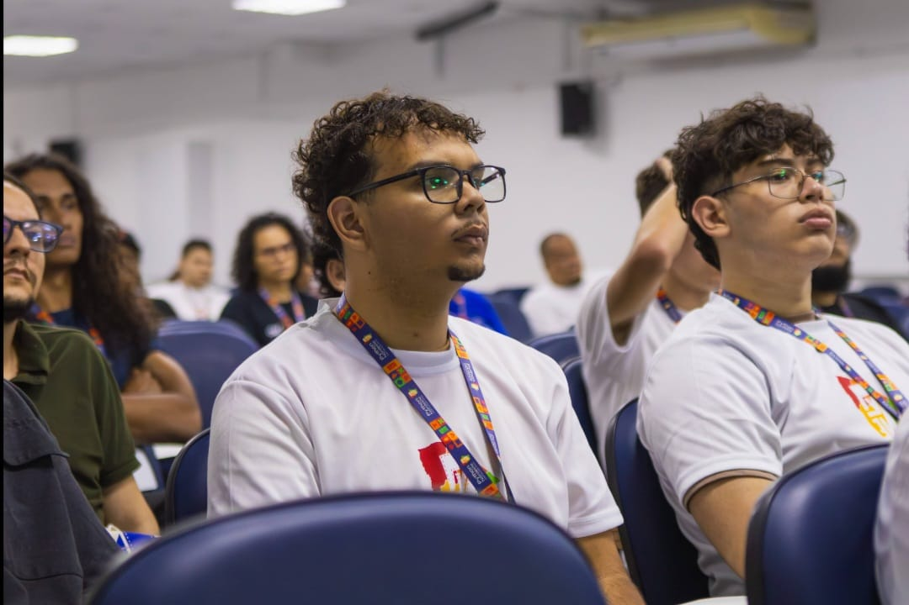
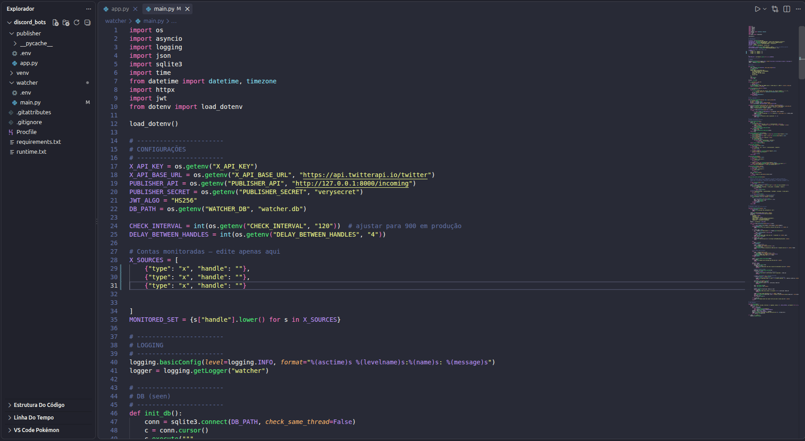
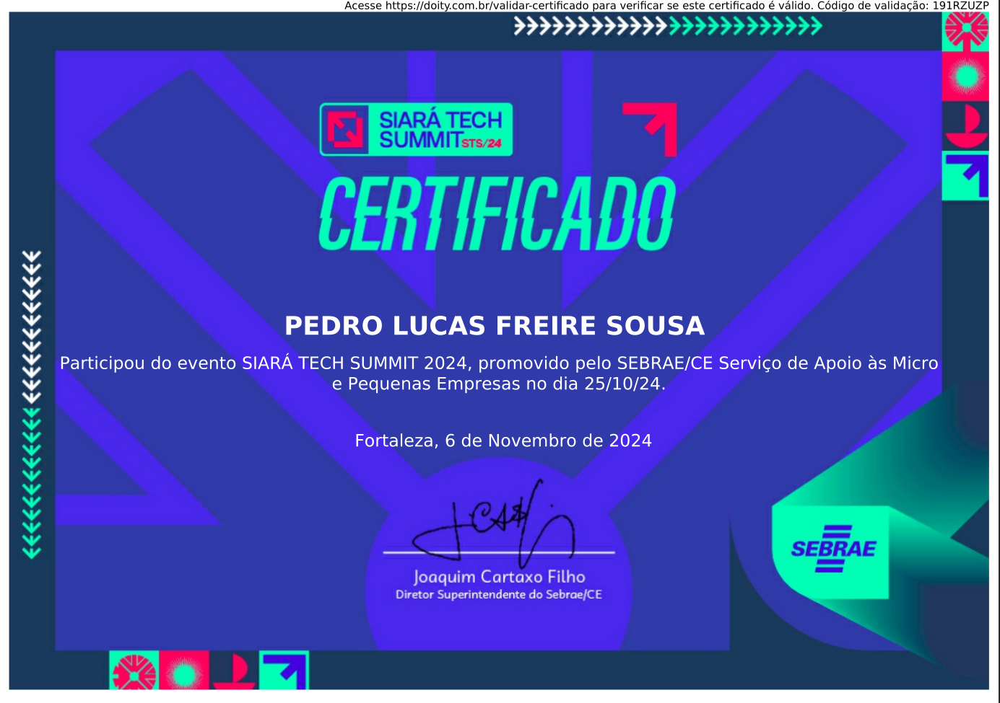
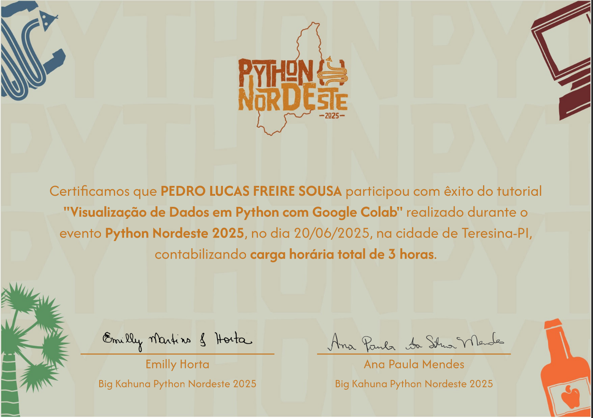
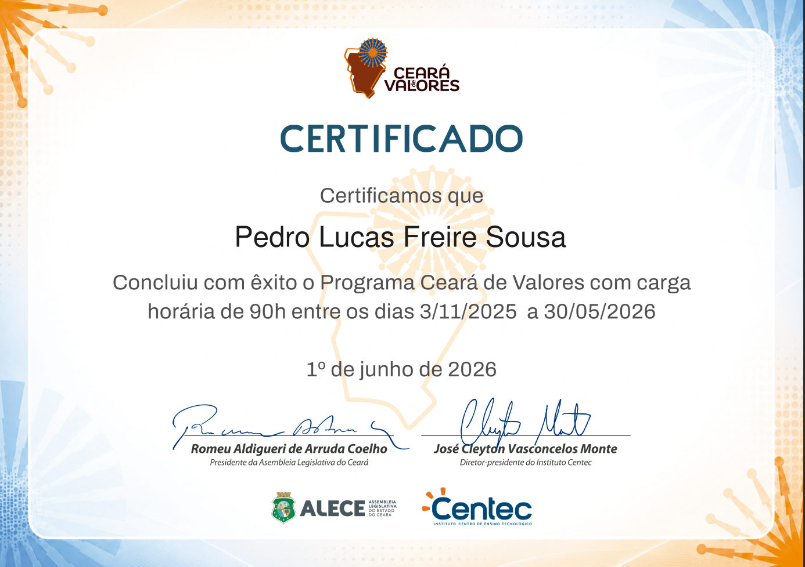
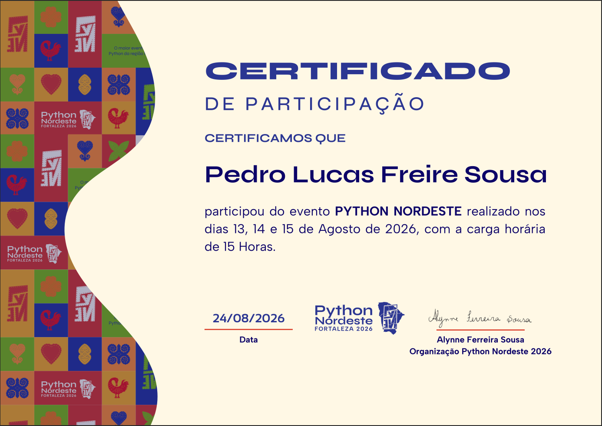
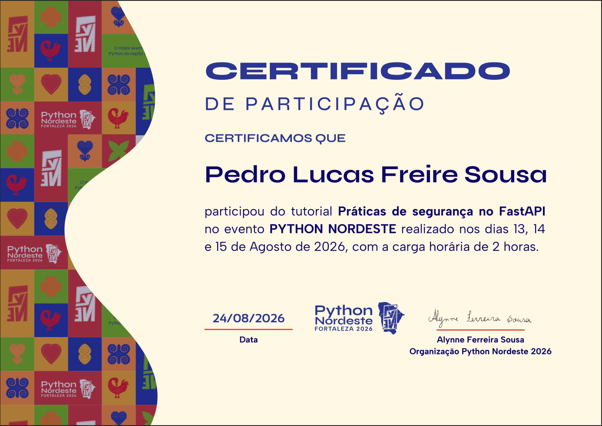
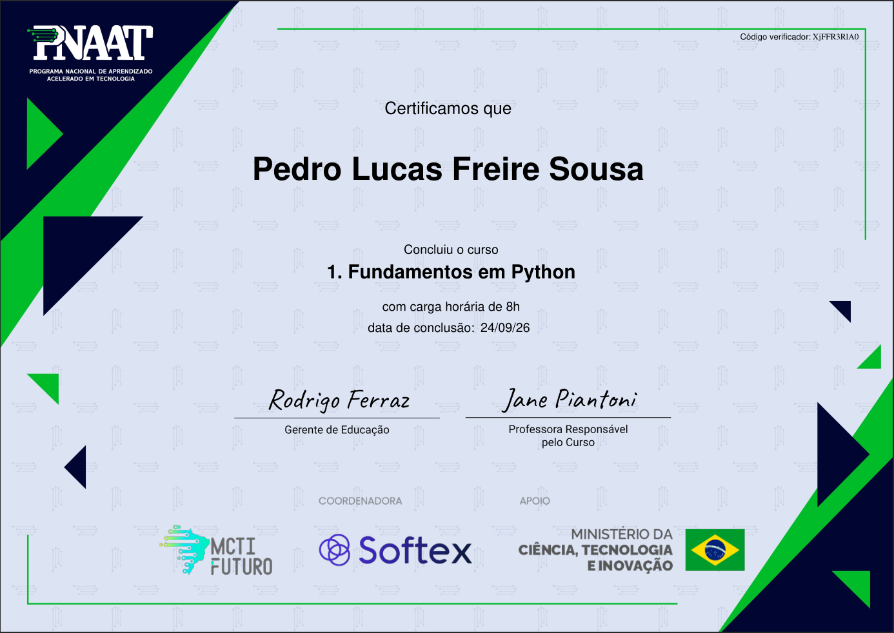

Pedro Lucas Freire Sousa
Desenvolvedor Back-end
Técnico em Informática
Estudante de Análise e Desenvolvimento de Sistemas
Sobre mim
Olá! Sou Pedro Lucas Freire Sousa, estudante de Análise e Desenvolvimento de Sistemas e formado como Técnico em Informática. Tenho experiência em desenvolvimento Back-end, com participação em projetos voltados ao ecossistema Web3, além de conhecimentos em Python, Node.js, JavaScript, HTML, CSS, SQL, AWS e Git/GitHub. Sou apaixonado por tecnologia e estou sempre em busca de novos desafios que me permitam evoluir como desenvolvedor. Gosto de criar soluções que resolvam problemas reais, aprender novas ferramentas e transformar ideias em projetos funcionais. Neste portfólio você encontrará alguns dos projetos que desenvolvi ao longo da minha jornada, demonstrando minhas habilidades técnicas e meu compromisso com o aprendizado contínuo.
Habilidades

Projetos
Bot de Monitoramento - Twitter (X)

Sistema desenvolvido em Python para monitorar publicações de contas específicas do Twitter (X) e encaminhar automaticamente novos conteúdos para o Discord, utilizando APIs, autenticação JWT, SQLite e processamento assíncrono.
Diplomas e Certificados






